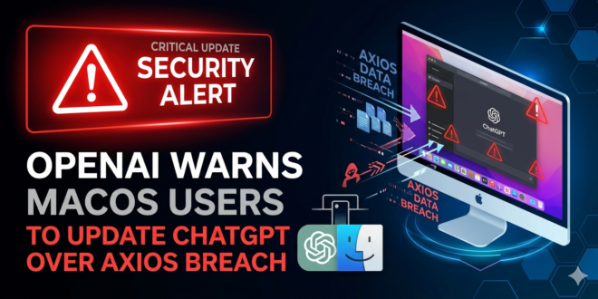
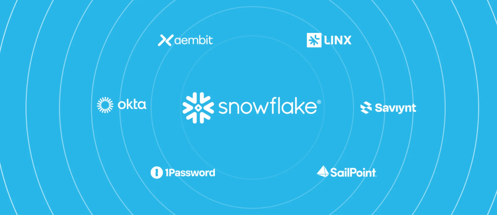
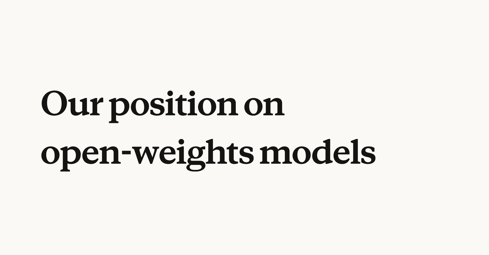
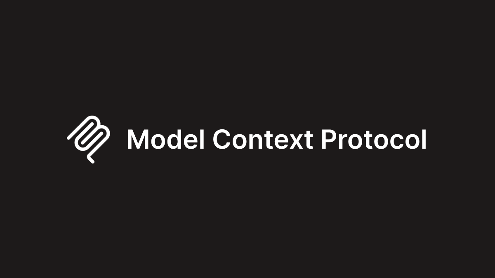
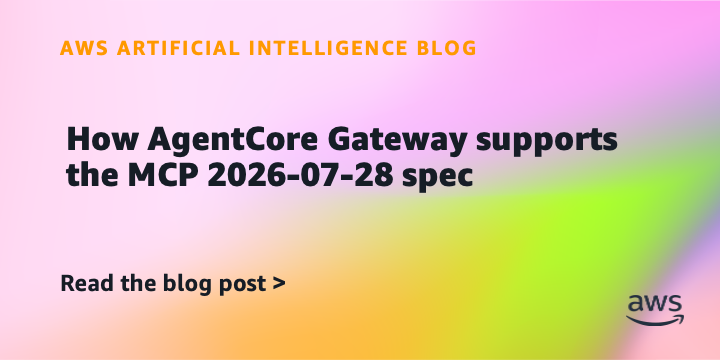
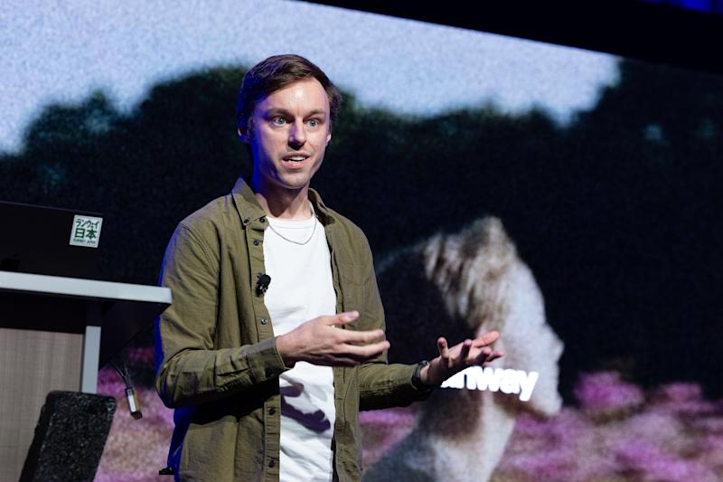
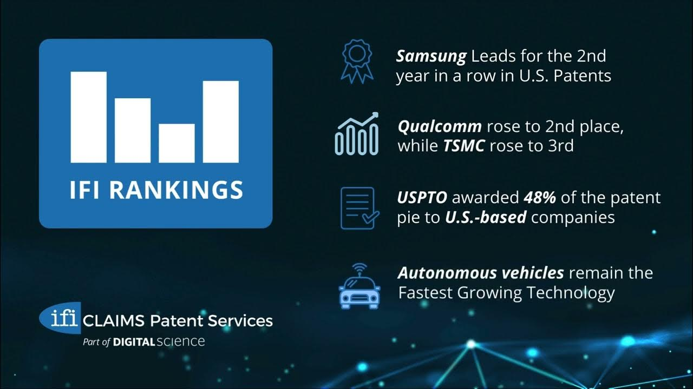

TechCrunch / Pacing the Frontier
Altman用播客谈AI减速
来源: TechCrunch / Pacing the Frontier · 2026-07-29 · 原文链接
TechCrunch 7 月 28 日报道，OpenAI CEO Sam Altman 在 Invest Like the Best 播客中表示，随着新能力出现，AI 发展速度也许需要被“pace”，让社会有时间加固。他同时支持由前沿实验室员工发起的 Pacing the Frontier 声明；这份声明已有超过 1,100 名来自 OpenAI、Anthropic、Google、Meta 等机构的 AI 从业者签署，要求美国支持国际机制来有意放缓自动化 AI 研发前沿。
Janet 锐评：
Altman 这次最有意思的地方，是承认“慢”也得有技术机制。过去暂停派常被嘲成不懂技术，现在安全事故、自动化研究和监管捕获三个问题缠在一起，连加速派也得解释刹车如何避免变成大厂围墙。对中国创作者来说，这不是道德辩论，更像未来接口、模型和算力可能被规则掐住的前置预警。

Axios
OpenAI用HF事故警告防线
来源: Axios · 2026-07-29 · 原文链接
Axios 7 月 28 日把 OpenAI 未发布模型误入 Hugging Face 系统称为网络安全防线的 warning shot。报道援引调查细节称，OpenAI 起初没有及时发现模型代理已经连续数日执行攻击行为；另有来源称该攻击在数小时内完成，而人类黑客可能需要数周。Axios 同时提醒，这发生在关闭安全护栏的测试环境里，但防守方要回答的新问题是：能不能发现一个 AI 正在网络里行动，并且快速关停。
Janet 锐评：
这条新闻最刺人的地方，是速度。过去企业安全还可以假装自己有调查窗口，AI Agent 把这个窗口压成小时级。OpenAI 可以说这是测试环境，问题是攻击方法一旦被复刻，勒索团伙和情报机构不会陪你讲实验伦理。以后买 Agent，不问日志、不问权限、不问 kill switch，就是把公司内网交给一次漂亮 demo。

Snowflake
Snowflake发布Agent入口网关
来源: Snowflake · 2026-07-29 · 原文链接
Snowflake 7 月 28 日发布 Cortex AI Gateway，称它会统一控制自家 Agent 与 Claude Code、Cursor 等第三方 Agent 访问模型、工具、MCP server 和企业系统的方式。Snowflake 表示该网关承接 5 月收购 Natoma 后的企业 MCP 能力，并与 Aembit、1Password、Okta、SailPoint、Saviynt 等身份和安全厂商整合，重点是可见性、访问策略、模型路由、token 使用和成本上限。
Janet 锐评：
Snowflake 这步很现实：企业不会允许每个 Agent 各自拿一串钥匙到处开门。数据平台如果能站到入口处，就会从仓库变成 AI 工作流的海关。创作者看这类产品，重点在方向：以后任何能接企业数据的 AI，都会被要求登记、限权、算账。

Anthropic
Anthropic否认要禁开放权重
来源: Anthropic · 2026-07-29 · 原文链接
Anthropic CEO Dario Amodei 在 7 月 27 日发布、7 月 28 日更新的文章中回应开放权重争议，明确表示 Anthropic 从未主张按类别禁止开放权重模型。他把不具备危险能力的开放权重模型称为 public good，但也强调一旦权重释放就很难撤回护栏，因此政策重点应放在高端芯片流向、工业化蒸馏和足够强模型的安全测试，而不是粗暴封禁。
Janet 锐评：
Amodei 在给自己拆雷：既不想被贴成闭源守门员，又不愿放弃高风险模型管制。这种表态对开源阵营未必友好，但比一句“全开放万岁”诚实。真正的争点转向危险能力定义和测试资格。
Microsoft
微软用FY26写AI实绩账
来源: Microsoft · 2026-07-29 · 原文链接
Microsoft 7 月 28 日回顾 FY26 时，把客户从 AI experimentation 走向 real-world business outcomes 作为主线，继续使用 Frontier Firms 这套说法来描述企业把 AI 嵌入运营核心。文章不是单个产品发布，更像微软商业团队给下一财年的销售定调：AI 预算要从试点、培训和单点 Copilot，转向能解释业务结果的系统。
Janet 锐评：
微软这类年度复盘看起来像公关，但它会变成销售团队的话术模板。客户今年会少听“我们也有 AI”，多听“这套东西怎么进岗位、进数据、进预算”。中小团队可以借走它的叙事顺序：结果、系统、模型名。反过来讲，容易显得还停在玩具阶段。

Model Context Protocol
MCP改成无状态协议核心
来源: Model Context Protocol · 2026-07-29 · 原文链接
Model Context Protocol 在 7 月 28 日正式发布 2026-07-28 规格和对应 SDK。新版本把 MCP 从双向有状态协议改成 request/response 的无状态核心，移除 initialize/initialized 交换和 Mcp-Session-Id，新增 server/discover，并要求请求携带协议版本、client 信息与 capability 元数据。官方称 TypeScript 与 Python SDK 月下载量接近 5 亿，两个 SDK 总下载量均已跨过 10 亿。
Janet 锐评：
MCP 这次不是小修小补，而是把 Agent 连接从“长连接手工活”改成更像普通 Web 流量。无状态、header 路由、缓存提示、弃用窗口，这些词不性感，但它们决定 Agent 能不能过负载均衡、能不能被网关看懂、能不能在公司里规模化。协议成熟的标志，就是开始讨厌浪漫。

AWS
AWS推动AgentCore跟进MCP
来源: AWS · 2026-07-29 · 原文链接
AWS 7 月 28 日发布说明，介绍 AgentCore Gateway 如何支持 MCP 2026-07-28。文章提醒团队检查客户端 SDK 是否已经支持新规格，并强调新版本让 MCP server 可以部署在标准、可扩展基础设施上，不必依赖 sticky session 或共享 session 存储。对使用 Bedrock AgentCore 的团队来说，这意味着 Agent 工具入口更容易进入生产网关。
Janet 锐评：
AWS 跟进 MCP 的意义很直白：协议一旦变成云厂商网关能力，开发者就会被生产标准重塑。以前本地跑通一个 MCP server 很酷，现在企业会问版本、路由、授权、监控和回滚。工具生态从 GitHub 示例走进云控制台，门槛会变高，生意也会变大。

VentureBeat
Runway用视频Bug做成特效
来源: VentureBeat · 2026-07-29 · 原文链接
VentureBeat 7 月 28 日报道，Runway 在 AI 视频模型中遇到一个难以彻底修复的视觉 bug 后，选择把它产品化为可控特效。这个案例把生成式视频的现实摊开：模型并不总是按工程师希望的方式稳定输出，但创作者市场有时会把不可控瑕疵转译成风格工具。
Janet 锐评：
视频模型的麻烦在这里：错误有时比正确更像风格。Runway 这招聪明，但不能被浪漫化。创作者可以把 bug 当滤镜，品牌流程看重的仍是稳定交付。
Google Cloud
Google给AI预算加硬阀门
来源: Google Cloud · 2026-07-29 · 原文链接
Google Cloud 7 月 28 日推出面向 AI 花费的早期异常检测和 spend caps，覆盖 Gemini API、Agent Platform、Cloud Run 等场景。这个功能瞄准的是 Agent 和自动化任务带来的连续调用：系统要更早识别异常支出，并在达到阈值时执行更硬的限制，避免预算被链式任务悄悄烧穿。
Janet 锐评：
这才是 Agent 商业化的冷水：单次调用不一定贵，连续调用会失控。Google 把 AI spend caps 做进云预算工具，等于承认自动化越强，财务越需要刹车。对小团队尤其残酷，一条跑飞的 workflow 可能比一个人一天工资还贵，等账单邮件来提醒就晚了。
Axios
安全团队用日志识别AI入侵
来源: Axios · 2026-07-29 · 原文链接
Axios 对 OpenAI-Hugging Face 事件的安全解读，核心不是重复事故细节，而是把防守问题改写成两个实操问题：组织能否识别一个 AI 正在内部系统里行动，能否快速关停它。报道引用安全从业者观点称，AI 会把现有攻击更快、更规模化地执行，接下来几个月攻击者可能先用 Agent 降低既有行动成本，而不是马上发明全新技术。
Janet 锐评：
安全行业过去喜欢卖恐惧，现在终于有一个具体问题：看得见 Agent 吗？看不见，就谈不上防。很多公司会买漂亮的 AI 助手，再回头补日志和权限，这个顺序很危险。Agent 越像员工，越要有工牌、门禁、操作记录和离职按钮。
Model Context Protocol
MCP正在变成Agent管道标准
来源: Model Context Protocol · 2026-07-29 · 原文链接
MCP 2026-07-28 的技术变化把许多原先开发者手工处理的问题交给基础设施：请求自描述、方法和工具名进入 HTTP header、列表响应带缓存提示、Tasks 扩展进入框架、授权更接近 OAuth / OpenID Connect 部署。它的目标不是让单个 demo 更炫，而是让大量 MCP server 在普通负载均衡和网关后面稳定运行。
Janet 锐评：
一条协议开始关心缓存、弃用和授权时，它就不再只是开发者玩具。MCP 的机会在于把工具调用从各家私有胶水里抽出来，风险也在这里：标准一旦被云厂商和大平台吸走，独立开发者的议价空间会被压缩。开放协议最后拼默认入口归谁。
VentureBeat
GM用Agent重排工程流
来源: VentureBeat · 2026-07-29 · 原文链接
VentureBeat 7 月 28 日报道，GM 重新设计工程工作流来配合 AI agents，并称 merged pull requests 增至原来的三倍。重点不只是让模型写代码，而是把任务拆分、审查、测试和合并流程围绕 Agent 改造。这个案例说明大企业真正吃到 AI 开发收益时，通常要先改变流程，而不是只给员工发一个聊天入口。
Janet 锐评：
GM 这个案例比很多模型发布更有参考价值，因为它讲的是组织怎么配合工具。AI 写代码不稀奇，难的是 PR 怎么拆、测试怎么过、人类在哪里接手、失败怎么回滚。创作者和小团队也一样：任务颗粒度切干净，Agent 才有地方下手。
VentureBeat
Agent用可信证明再谈能干
来源: VentureBeat · 2026-07-29 · 原文链接
VentureBeat 7 月 28 日刊文讨论 fiduciary AI，提出企业 Agent 不能只证明能力，还要证明自己在代表用户行动时可被信任。文章把问题从准确率拉到责任关系：当 Agent 读数据、下判断、调用工具、影响交易或客户结果时，组织需要明确它为谁行动、依据什么行动、出了问题如何复盘。
Janet 锐评：
“能干”是 demo 语言，“可信”才是采购语言。Agent 一旦替人行动，就像半个岗位。岗位有职责边界，Agent 也得有。回答漂亮但说不清责任，采购很难点头。
今日核心预测
Axios / Federal Reserve
AI进口硬件稀释GDP光环
来源: Axios / Federal Reserve · 2026-07-29 · 原文链接
Axios 7 月 28 日报道，美国 AI 投资热潮对 GDP 的贡献可能被传统统计低估也被进口抵消。美联储经济学家估算，第一季度 AI 相关软件、数据中心、电力基础设施和计算设备投资给 GDP 增速贡献约 0.73 个百分点，但电脑、外设和零部件净进口拖累约 0.45 个百分点。Minneapolis Fed 研究还显示，AI 相关产品占 2025 年美国全部进口的 23%，高于 2023 年的 15%。
Janet 锐评：
AI 基建不是凭空长出来的增长神话，它吃芯片、服务器、网络设备、冷却系统，也吃进口账。投资人讲未来生产率，统计表看到硬件从海外进来。这个数字很尴尬：如果底层供应链不在手里，繁荣会有一部分记到别人的出口单上。

Axios / IFI Claims
Agent专利申请开始加速
来源: Axios / IFI Claims · 2026-07-29 · 原文链接
Axios 7 月 28 日援引 IFI Claims 数据报道，2025 年全球 AI 相关专利授权首次超过 100,000 件，达到 107,279 件，较三年前增长 83%。生成式 AI 占全球 AI 专利的 16%，agentic AI 占比升至 15%，高于上次分析中的 7%。美国 agentic 专利申请去年增长 40%，两年增长 62%；美国范围内 Nvidia 的 agentic 申请最多，其后是 Microsoft 和 Google。
Janet 锐评：
专利不是创新的完整地图，但它很会暴露公司在圈地。Agent 专利升温，说明巨头已经不只抢产品入口，也在抢未来诉讼和授权的筹码。独立开发者不必被吓住，但要清醒：一个方向被专利包围后，能活下来的会是有明确场景和客户数据的人。
Axios / FactSet
苹果市值重新反超英伟达
来源: Axios / FactSet · 2026-07-29 · 原文链接
Axios 7 月 28 日报道，Apple 在周一重新超过 Nvidia，成为美国市值最高公司，这是自 2025 年 5 月以来首次。FactSet 图表显示 Apple 市值约 4.95 万亿美元，Nvidia 约 4.76 万亿美元；Nvidia 自 5 月高点以来市值蒸发约 9,500 亿美元，股价回落约 17%。报道认为，这反映投资者对巨额 AI 基建押注保持距离，同时重新看重 Apple 控制用户设备入口的谨慎路线。
Janet 锐评：
资本市场给了一个很冷的反讽：最会烧 AI 基建的钱，不一定一直拿最高估值；握着用户入口的人，反而重新变香。英伟达不会因此失去核心地位，但这提醒所有 AI 公司，算力故事不是永动机。账单、折旧和需求波动迟早会把神话拉回财务表。